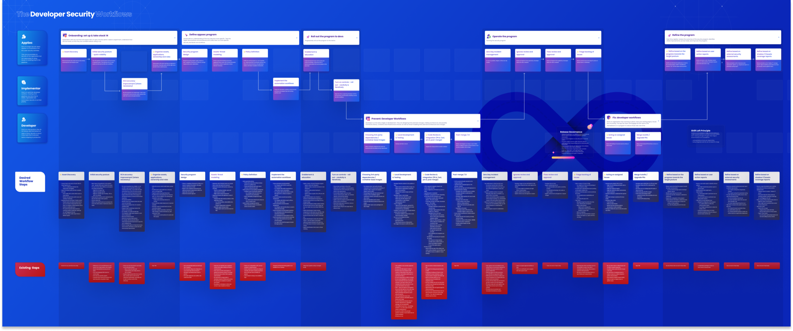
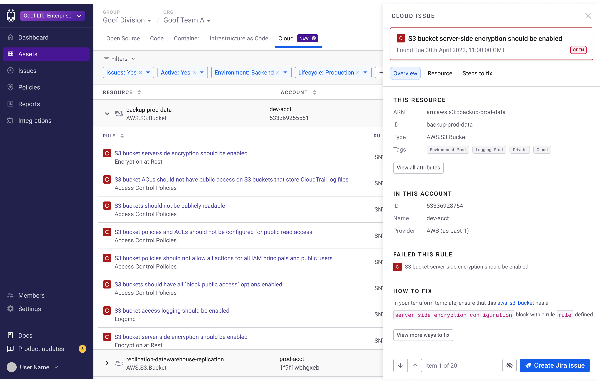

A sample of projects to give a flavour of my experience.
Experience system mapping
A sales-led roadmap was storing up product and UX debt, creating friction at renewal. The CPO asked leadership to become more user workflow led.
With SMEs and field teams I created an Experience Map of application security: a solution-independent view of what every customer does, plus a target state.
The map told the story of how personas interact to secure a system, and helped product teams see the broader impact of their work.

Five products
into one
Many products and features shipped over the years, but the web app's IA had changed little since launch. The UI was dated, user workflows disjointed, navigation hard to understand.
We used the experience map to create concepts for what Snyk could become in 12 to 18 months, broken down by the three personas and key stages, with Engineering, Product and Field teams.
Redesigned the information architecture of the app to support specific workflows. Shipped a new design system. Brought to life a vision of the product, shaped roadmaps.
